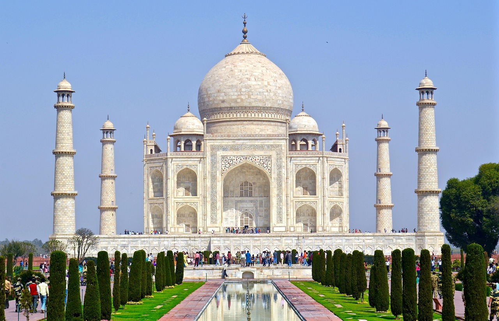
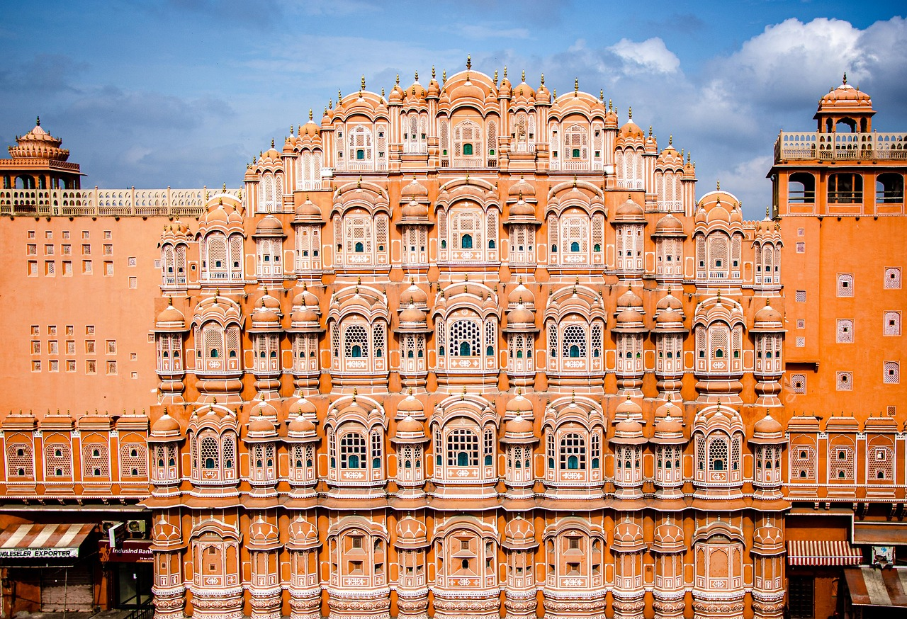
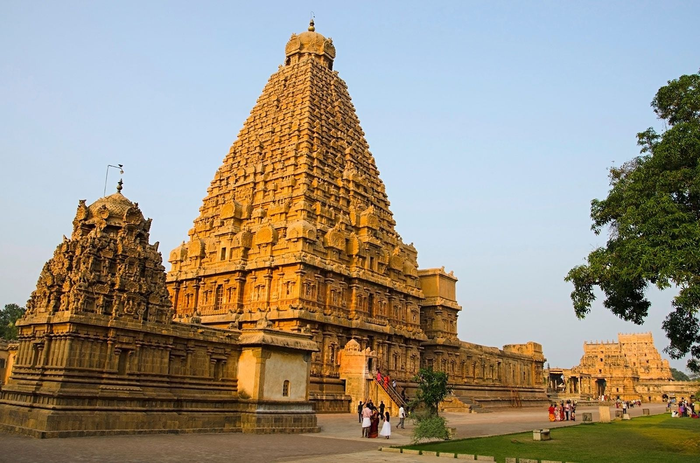
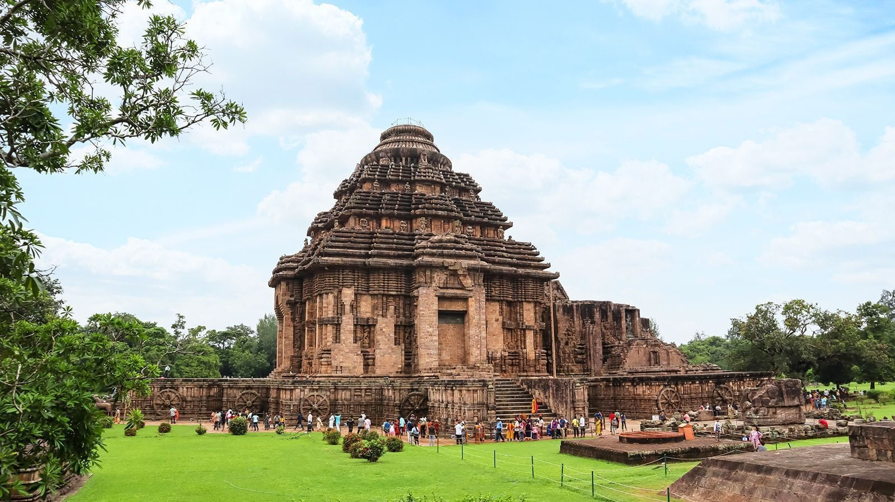

Taj Mahal
Agra, Uttar Pradesh
The Taj Mahal is one of the world's most iconic monuments, built by Emperor Shah Jahan in memory of Mumtaz Mahal. It is celebrated for its stunning white marble design and exceptional Mughal craftsmanship.
Explore India's architectural heritage through magnificent temples, forts, palaces, monuments, and colonial landmarks built across centuries..
Explore ArchitectureBrowse architectural styles, search famous monuments, and explore India's rich architectural heritage.
Showing all 6 Architectural wonders

Agra, Uttar Pradesh
The Taj Mahal is one of the world's most iconic monuments, built by Emperor Shah Jahan in memory of Mumtaz Mahal. It is celebrated for its stunning white marble design and exceptional Mughal craftsmanship.

Jaipur, Rajasthan
Known as the Palace of Winds, Hawa Mahal is famous for its unique honeycomb façade with 953 windows designed for royal women.

Thanjavur, Tamil Nadu
Built during the Chola dynasty, this UNESCO World Heritage Site is one of the greatest achievements of Dravidian architecture.

Kolkata, West Bengal
Built in memory of Queen Victoria, this marble monument blends British and Mughal architectural influences.

Konark, Odisha
Designed as a colossal stone chariot dedicated to the Sun God, Konark is celebrated for its intricate carvings.

Mysuru, Karnataka
One of India's grandest royal residences, Mysore Palace is famous for its Indo-Saracenic architecture and dazzling illumination.
Try a different search term or select another category.